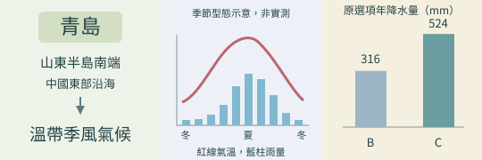

分享原卷｜第 29 題
完整原題
作答所需文章／材料
【從青島路名看歷史】 「青島」原指今日青島市城區海灣的一座綠樹成蔭小島，今日是指山東半島南端的「青島市」。19世紀末，《膠澳租借條約》簽訂後，這個地區成為德國在東亞的「膠州灣租借地」，租借期為99年，德國在此建港、修鐵路，德皇威廉二世將新建的市區命名為青島，「青島」作為一個城市正式誕生。德國斥鉅資按城市計畫設立德式風格的港城，街道路名也以德國城市、知名人士等方式命名，出現漢堡街、俾斯麥街等德式路名。第一次世界大戰期間，此地遭他國軍隊占領後，中國被逼簽署條約承認該國占領合法化；此地道路名稱也同樣依該國語言進行大規模變更，重新命名為具有該國特色的深山町、英町、萬年町等。 經歷巴黎和會外交斡旋與抗爭，直至1922年華盛頓會議召開，經簽訂《解決山東懸案條約》，中國出讓多項經濟、政治特權後，正式收回此地，成為中華民國第一個由國家以法令行事宣布設市的城市。青島市內在殖民地時期的道路名稱遭廢去，為方便人們認識，也為了激發愛國心，取而代之的，是許多以中國地名命名的河南路、江蘇路等，並且大多沿用至今。
文中提及的該城市，其當地氣候類型最接近下列何者？
(A) 氣候圖A
(B) 氣候圖B
(C) 氣候圖C
(D) 氣候圖D
先想一想，再查看答案、解說與原圖
原卷作答：B
正確答案：C。冬冷夏暖熱、夏雨集中、冬季乾燥，最符合本題要辨識的溫帶季風氣候。
逐項解析
| 選項與原句 | 判讀 | 句意與判斷理由 |
|---|---|---|
| (A) 氣候圖A | 不選 | 夏季最高月均溫約17～18°C，較涼，不是四者中最佳的溫帶季風代表。 |
| (B) 氣候圖B | 不選 | 冬冷夏熱，但年雨量316毫米、整體較乾；相較C不符合本題預期類型。 |
| (C) 氣候圖C | 應選 | 冬冷夏暖熱、夏雨集中、冬季乾燥，最符合本題要辨識的溫帶季風氣候。 |
| (D) 氣候圖D | 不選 | 全年月均溫高，呈熱帶型特徵，不符山東沿海地區。 |
詳細說明與解題步驟
一、從文章定位
文章明示山東半島南端的青島，屬中國北方東部沿海、受季風影響的區域。題目問氣候類型最接近，不是要找青島每個數值完全一樣的資料站。
二、先看氣溫，再看降水
D全年炎熱，不符合青島；A夏季明顯較涼。B、C都有冬冷夏熱特徵，要再看降水：B年雨量只有316毫米，整體較乾；C年雨量524毫米，夏雨集中較明顯，較符合本題預期的溫帶季風型，選C。
三、氣溫線與雨量柱分開讀
每張圖的紅線是月均溫，藍柱是月降水量。不要把年均溫最低或年雨量最大當作單一判斷標準；位置、年溫差與雨季都要一起看。
四、別把選項C當成青島的實測氣候
C的年均溫4.2°C及冬季低溫，不是青島的實際氣候資料。此處選C是在比較四種圖呈現的氣候類型，不能把其數字背成青島年均溫。也不能把400毫米當成所有氣候分類通用的硬界線。

① 文章先定位：青島
文章明示山東半島南端的青島，位於中國東部沿海，屬溫帶季風氣候。先用位置鎖定類型，再比較原題四張氣候圖。
② 氣溫與雨季，要分開看
紅線看冬冷夏暖熱，藍柱看降水是否集中夏季。D全年炎熱不符，A夏季較涼；B、C都有明顯年溫差，還要比較雨量與季節分布。
③ 比類型，C比B更符合題意
原圖B年降水量316毫米，整體較乾；C為524毫米，夏雨集中較明顯，因此選C。C年均溫4.2°C不是青島的實際數據，不能直接背成當地氣候值。
④ 辨識青島氣候類型，不把選項當實測
答案 C：較符合溫帶季風類型
- 先定位青島，再合看年溫差與雨季。
- 紅線讀氣溫，藍柱讀降水，不能混用。
- 題目比較最接近的類型，不是找青島每項數值完全相同的測站。
核對註記：已核對題幹、全部選項與必要材料；教材對應課次未確認，歸綜合。
原圖（僅本題）